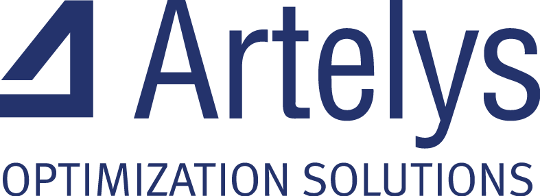

About
AssetLife helps you answer these questions:
When to maintain, replace or repair an asset?
Based upon which criteria?
What budget?
How to manage the stocks?
The library is built on NumPy and SciPy and distributed as a Python package.
Call for contributions
The AssetLife project welcomes your expertise and enthusiasm!
Before contributing, please read our contributing guide. It describes the whole contribution process.
Small improvements or fixes are always appreciated. If you are considering larger contributions to the source code, please contact us first by opening an issue.
Writing code isn't the only way to contribute to AssetLife. You can also:
- review pull requests
- help us stay on top of new and old issues
- report bugs and suggest new features
- improve the documentation and the user guides
- develop tutorials, presentations and other educational materials
- share your use cases in asset management
- help with outreach and onboard new contributors
Our users
